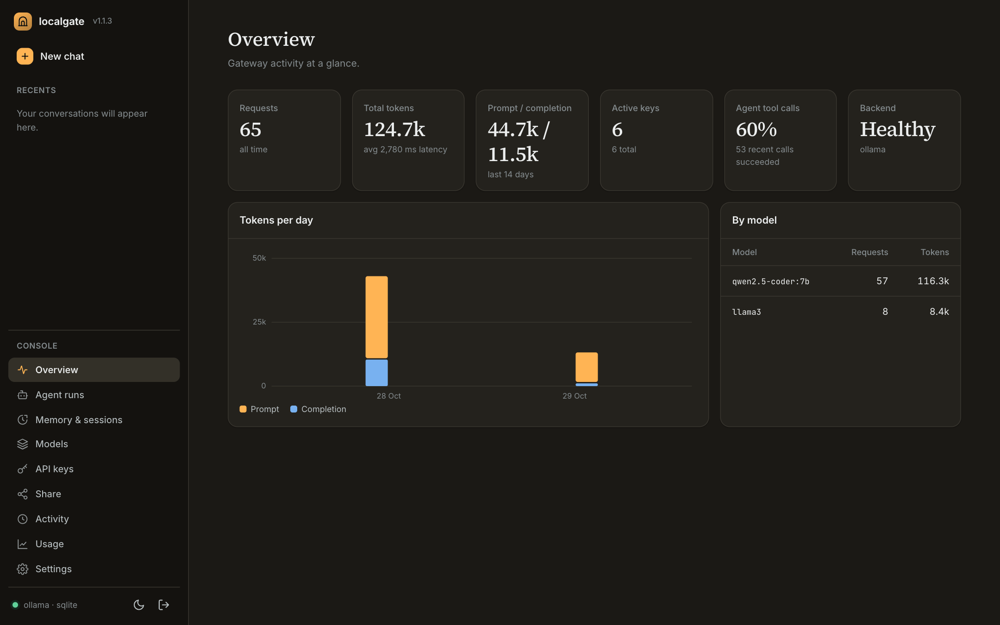
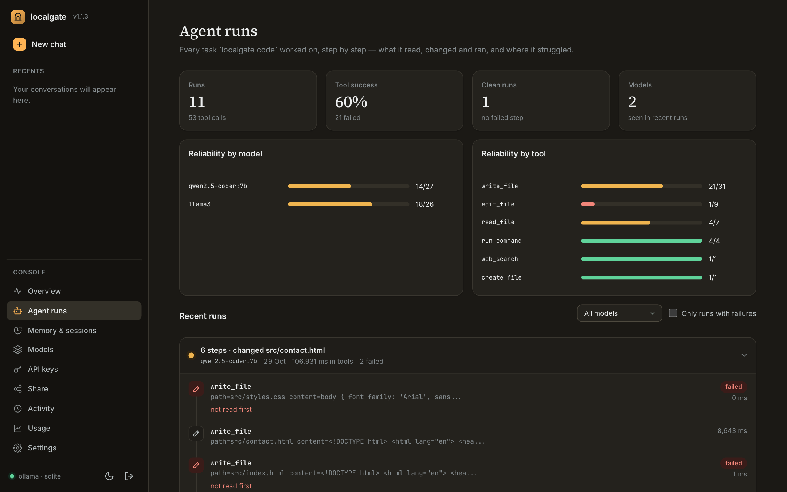

OpenAI-compatible
Works with any OpenAI SDK, LangChain or curl. Unknown fields are forwarded to the backend.
Real API keys, token accounting, and RAG memory that makes a small model remember far more than its context window holds. It sits between your app and Ollama, vLLM or llama.cpp, without touching how you serve models.
pip install localgate

Model servers solve serving. localgate is the management layer around it.
Works with any OpenAI SDK, LangChain or curl. Unknown fields are forwarded to the backend.
Create, revoke and rate-limit per key. Keys are hashed, never stored raw.
Send an X-Session-ID: turns are chunked, embedded, retrieved and folded into a rolling summary.
Prompt and completion tokens per key, per model, over time.
Chat, agent runs, memory, keys and usage at /dashboard/. No build step, works offline.
localgate code reads, edits and tests your project, with diffs, sandboxed commands and a session ledger.
Per-device keys with model, quota and expiry limits, a fair queue, and QR-code setup.
Ollama, vLLM, llama.cpp or any OpenAI-compatible server. SQLite by default, Postgres with one env var.
JSON logs with correlation IDs, Prometheus metrics, liveness/readiness split, graceful shutdown.
Your app talks to localgate exactly as it would talk to OpenAI. localgate checks the key, adds memory, forwards to your inference server and records usage.
OpenAI SDK, LangChain, curl, or localgate code, pointed at localhost:8000/v1.
Ollama, vLLM, llama.cpp or any OpenAI-compatible server, on this machine or another.

localgate code task as a timeline, with reliability per model and per tool.Straight from the README. Also available as uv tool install localgate, pipx install localgate or the image ghcr.io/anjalllll/localgate.
pip install localgate
ollama serve # your inference backend
ollama pull llama3
ollama pull nomic-embed-text # enables RAG memory
localgate serve # first run: create your dashboard login
localgate keys create --name my-appfrom openai import OpenAI
client = OpenAI(base_url="http://localhost:8000/v1",
api_key="lg_9f3a...")
client.chat.completions.create(
model="llama3",
messages=[{"role": "user", "content": "Hello!"}],
)localgate serve is running, open http://localhost:8000 for the getting-started page and dashboard. It runs on your machine, so there is no hosted demo.